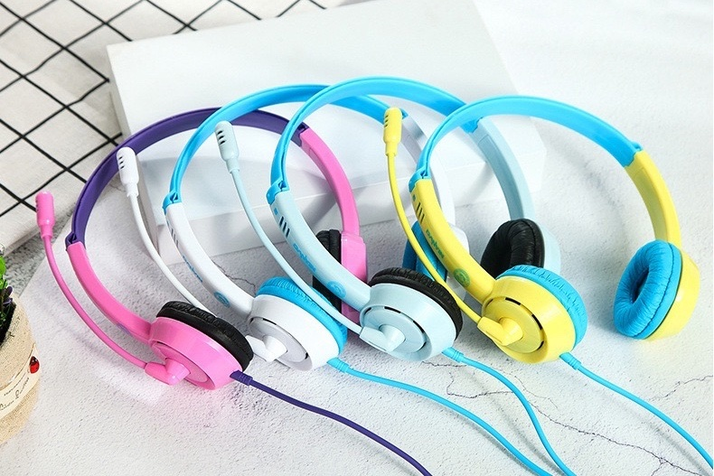

Are Noise Cancelling Headphones Really Effective in Reducing Noise?

A noise cancelling headphones is a term that can be confusing if you don't know how they work. Because of the complex technology involved, these headphones have been gaining a lot of attention. They were once rare, but they are now almost as common as an iPod. These headphones are becoming more popular, but some people may not be able to afford them. How do noise cancelling headphones work? And why would you want one?
Train stations, airplanes, and your workplace are some of the most noisy places. bulk school classroom headphones You would need to smile and bear the noise if you didn't have any protection to your ears. Passive noise cancelling headphones were the first headphones to be made for quiet.
The padding inside and outside the earpieces muffled exterior sounds. They block sound from reaching your earsdrum by blocking it physically. These headphones can be used to block out noises such as barking dogs, talking phones, and nagging mobile phones. These headphones are better at cancelling these noises than active noise cancellation headphones.
What are Noise Canceling Headphones and How Do They Work?
Passive headphones were the inspiration for the creation of the active noise cancelling headphones. These headphones can cancel out much more noise than any other models. These headphones will not completely silence you, but they will get you closer to it.
These headphones eliminate all sounds thanks to the new technology. It includes a microphone, noise-canceling circuitry and an extra speaker. The headphones contain all of this technology. These components work together by detecting the background noise and producing an equal but different sound inside your headphones. The noise canceling circuitry cancels out unwanted noises.
Active headphones, for example, produce a frequency that cancels out the constant hum from your office's air conditioner or jet engine. The best part about active noise cancellation is that the headphones can still be heard if you are typing on a keyboard. While active noise cancellation can be an effective way of blocking sound, there may be some hissing or a swoosh sound from the headphones when you use it.
Why use Noise Canceling Headphones?
Noise-reducing headphones are practical. I use my mp3 player to drown out outside noise. Experts agree that this can permanently reduce your hearing if it is done often and if there isn't an alternative.
Offers quiet and peace. Passive headphones are required to block out all the noises from a train, bus, or plane. bulk school classroom headphones The active headphones can't drown out the noises of babies crying or chattering passengers.
Helps reduce fatigue and increase focus. They also help to alleviate fatigue from traveling when you are exposed to low-frequency sound for a prolonged period. You can relax and the headphones will block out any noise, so that you are able to rest. Once you reach your destination, you will feel refreshed and alert.
You can increase the quality of your music's listening experience. You will enjoy a better listening experience thanks to the headphones. These headphones allow you to hear the finer details of your music clearly without the need to raise the volume.
The common misconception among those considering purchasing a sonic earphone is that they can block all outside noise. This is false. Remember that their purpose is to eliminate repetitive, loud sounds and not those associated with ringing phones or talking loudly. These external noises would be best suited for passive noise cancelling headphones.